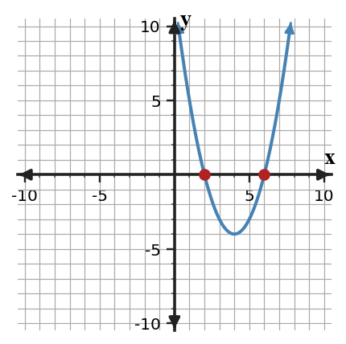
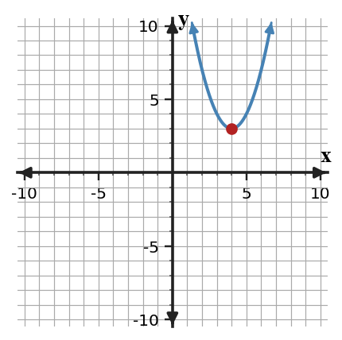

Choosing and Defending Solution Methods
Mathematical idea: Efficient quadratic solving starts by reading the form of the equation before choosing factoring, square roots, completing the square, or the formula.
You will compare solution methods and defend why a method fits a particular equation. You will also critique inefficient or inaccurate choices using structure, exactness, and graph meaning.
Learning Target
Learning Target: Students will compare factoring, completing the square, and the quadratic formula and select efficient solution methods.
I can statements
- I can formulate a solution-method plan based on the structure of a quadratic equation.
- I can use factoring, completing the square, or the quadratic formula when the equation structure supports the method.
- I can critique a selected solution method for efficiency, accuracy, and fit to the equation.
What's To Come
This is a long-range preview for future lessons. Do not solve it today. Instead, annotate it individually. Circle anything familiar, underline symbols or directions that seem important, and write notes about what information you think will be needed later.
As you annotate, ask yourself: What parts (words, symbols, graphs) do you KNOW? What parts look FAMILIAR? What parts look like jibberish?
Revise A Flawed Model. Create or revise a quadratic task for Choosing and Defending Solution Methods using the constraints below.
A student claims the provided graph is modeled by $y=4(x-5)^2+60$ and recommends factoring. Revise the model so it matches the graph's maximum, choose an efficient solving method for the intercepts, and defend your choice.

Intro
Directions
Read the introduction aloud with a partner or in a small group. As you read, annotate the text by highlighting important ideas, circling key vocabulary, and writing short notes about connections, questions, or predictions in the margins.
Choosing a method begins before any calculations happen. You should inspect the structure of the equation, including whether it is factored, a perfect square, vertex form, or standard form. The visible form often suggests the most efficient path.
Different quadratic equations reveal different features. A factorable standard-form equation may be fastest with factoring, while an equation with messy coefficients may be better handled by the quadratic formula. Completing the square is especially useful when vertex form or symmetry is needed.
Some equations already show important graph information. If an expression such as $(x-4)^2+6$ is set equal to zero, the squared term cannot be negative enough to cancel the positive $6$. That makes it possible to reason about no real solutions without expanding.
This section uses standard, factored, and vertex forms along with method-selection plans and written comparisons. The goal is to connect the method to the information the form provides.
In applied settings, the best method may depend on whether exact or approximate answers are needed. A defensible choice names the method, uses it correctly, and explains why it fits the equation or context.
Stop and Discuss
- What should you inspect before choosing a solving method?
- Why might one equation be better for factoring while another is better for the quadratic formula?
- How can a vertex-form equation show no real solutions without expanding?
Different forms reveal different solving moves.
| Equation form | Efficient first move |
|---|---|
| $(x-2)(x-6)=0$ | zero product property |
| $(x-4)^2=9$ | square roots |
| $x^2+6x+1=0$ | complete the square or formula |

Context: The form tells which graph feature will be found fastest: intercepts, vertex, or exact roots.
Example 1: Choose the Most Efficient Method
A team is sorting equations by solving method before doing the calculations.
- Choose the most efficient method for $(x-7)(x+2)=0$.
- Choose the most efficient method for $(x-3)^2=25$.
- Explain how the equation form guided your choices.
You Try It 1: Method Sort
Choose efficient methods for two new equations.
- Choose a method for $(x+9)(x-4)=0$.
- Choose a method for $(x+1)^2=16$.
- Explain how each form pointed to your method.
Stop and Discuss
- Which feature of the equation form made the method choice clear?
A squared expression is always nonnegative, so vertex form can show when a graph never reaches the $x$-axis.
$$0=(x-4)^2+3$$ $$ (x-4)^2=-3 \quad \text{has no real solution}$$
Context: If the graph represents height above a platform, no real zero means it never reaches the platform height in the model.
Example 2: Select and Solve
Solve $x^2-13x+40=0$ and defend your method choice.
- Choose an efficient method.
- Solve the equation.
- Explain why your method was more efficient than the quadratic formula for this equation.
You Try It 2: Solve and Defend
Solve $x^2-9x+20=0$ and defend your method.
- Choose an efficient method.
- Solve the equation.
- Explain why your method fits the structure of the equation.
Stop and Discuss
- When is the quadratic formula correct but not efficient?
A strong defense connects the equation's structure to the method.
Factoring
Use when integer factors are visible or quick.
Square roots
Use when the variable expression is already squared.
Completing square
Use when vertex form or symmetry is useful.
Formula
Use when other methods are inefficient or exact roots are needed.
Example: For $x^2+4x-3=0$, completing the square or the quadratic formula is more efficient than searching for integer factors.
Example 3: Exact Solutions When Factoring Is Not Efficient
Solve $x^2+2x-6=0$ exactly.
- Decide whether factoring over integers is efficient.
- Choose completing the square or the quadratic formula and solve.
- Defend why exact radical answers are appropriate here.
You Try It 3: Use an Exact Method
Solve $x^2-6x+2=0$ exactly.
- Decide whether integer factoring is efficient.
- Choose completing the square or formula and solve.
- Explain why a decimal approximation alone would be less precise.
Stop and Discuss
- Why does exact form matter when solutions are irrational?
Example 4: Analyze Vertex-Form Structure
A student expands $0=(x-5)^2+4$ before deciding whether real solutions exist.
Student claim: "I need standard form before I can tell if it crosses the $x$-axis."
- Use the original vertex form to decide whether real solutions exist.
- Explain why expanding is unnecessary.
- Write a method recommendation for this equation.
You Try It 4: Defend Without Expanding
Analyze $0=(x+2)^2+5$.
Student claim: "I should expand first and then try to factor."
- Decide whether the equation has real solutions.
- Explain why vertex form already answers the question.
- Recommend a method or reasoning strategy.
Stop and Discuss
- How can vertex form answer a solving question before any expansion?
Summary
Today you compared quadratic solving methods and chose methods based on equation structure. The focus was not only getting solutions, but defending why a method fits.
Factored form points to the zero product property, squared form points to square roots, vertex form can show a turning point or no real zeros, and standard form may require factoring, completing the square, or formula.
A common error is using the same method for every equation. That can work sometimes, but it may hide simpler structure or create more room for mistakes.
Strong understanding means you can read the form, choose an efficient method, solve accurately, and explain your choice using mathematical structure.
Common Mistakes
- Using formula every time. Why it is tempting: it always works for standard form. What to check instead: look for easier structure first.
- Expanding vertex form too soon. Why it is tempting: standard form feels familiar. What to check instead: ask what vertex form already reveals.
- Factoring when factors are not integer. Why it is tempting: factoring was useful earlier. What to check instead: switch methods when structure does not support factoring.
- Ignoring exactness. Why it is tempting: decimals are quick. What to check instead: decide whether exact radical answers are needed.
- Defending with preference only. Why it is tempting: a method may feel easier. What to check instead: name the equation feature that makes the method efficient.
Optional Future Task Reflection
Look back at the future task. Do not solve it yet. Highlight one part that makes more sense now than it did at the beginning. Circle one part that still feels unfamiliar. Write one sentence about what representation you would look at first.
Choose factoring, square roots, completing the square, or quadratic formula as the most efficient method.
- $(x-4)(x+9)=0$
- $x^2+5x+6=0$
Solve or interpret the quadratic situation for Choosing and Defending Solution Methods. Show the algebra that supports your answer.
Select a method and solve $x^2-11x+30=0$.
What is one idea about choosing and defending solution methods you understand better now than at the start of class? Write at least one complete sentence.
What is one thing about choosing and defending solution methods you still want to understand or practice? Be specific — name the idea, not just "everything."